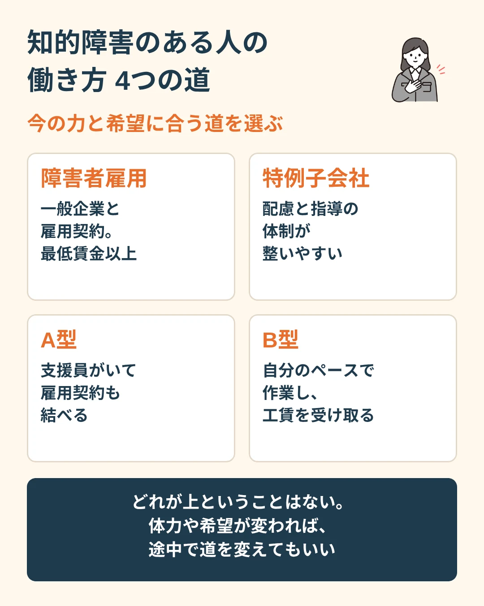
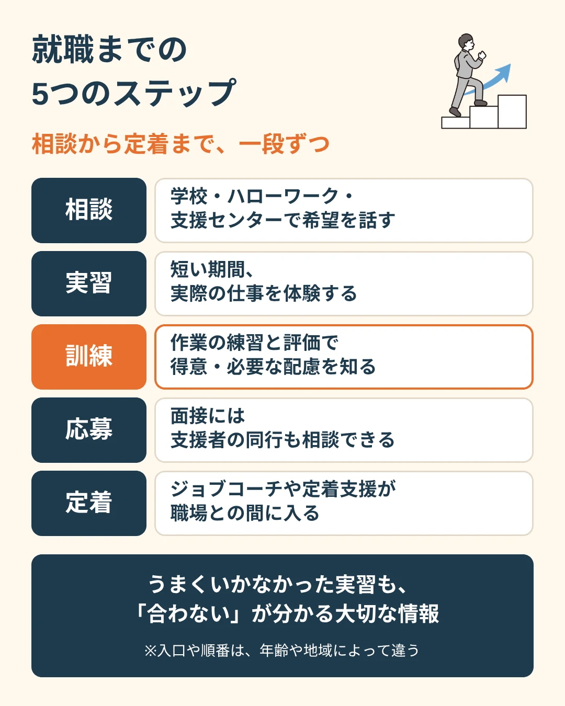
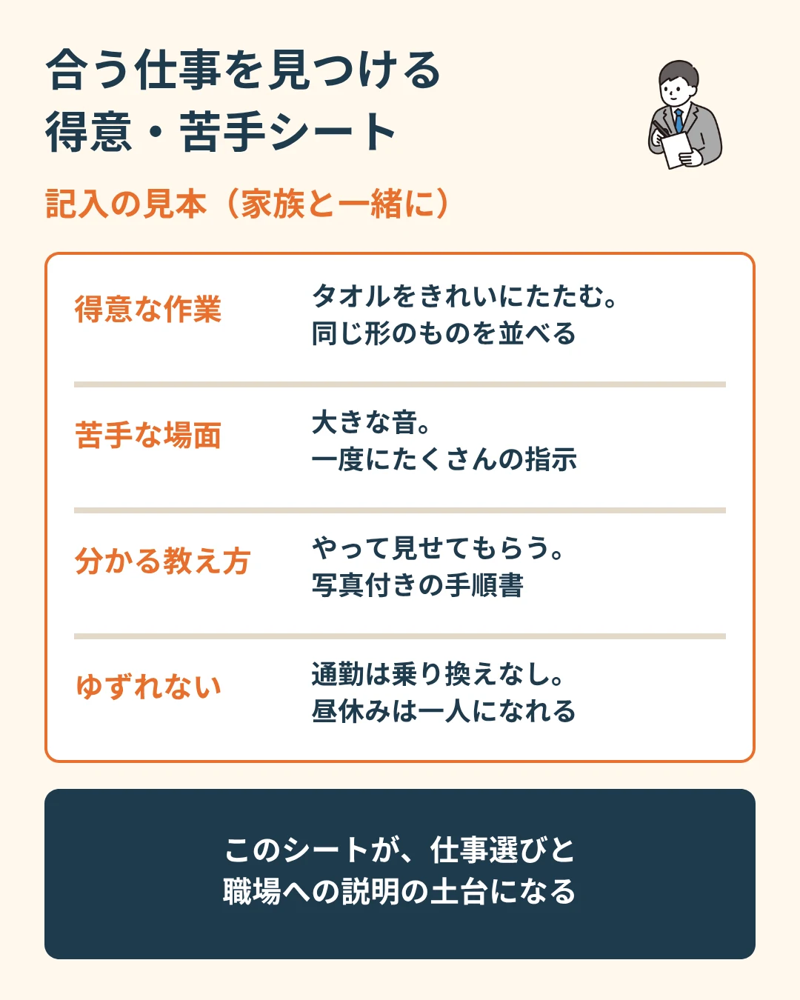
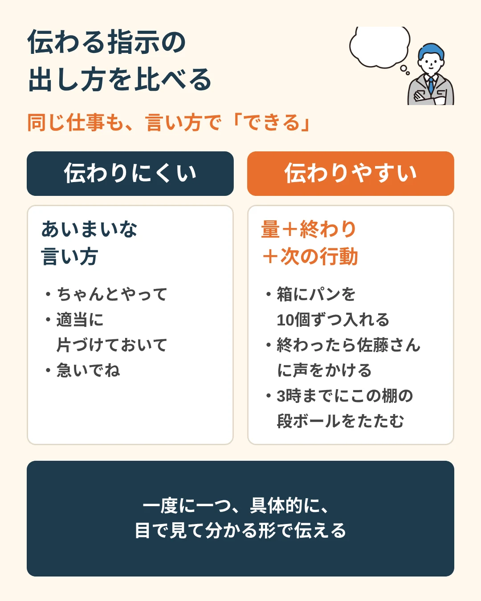
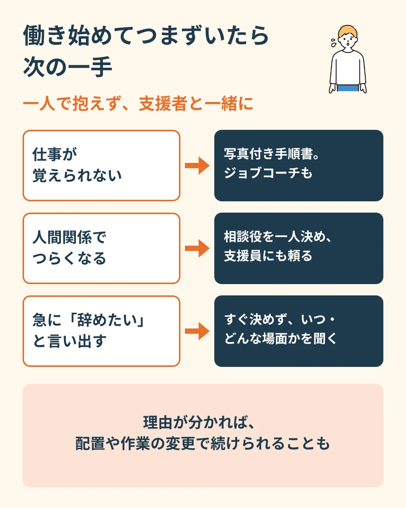

知的障害のある人に多い仕事と、働き方の4つの道
知的障害のある人が働いている仕事は、思われているより幅があります。よく見られるのは、オフィスや商業施設の清掃、食品の製造・加工や盛り付け、スーパーのバックヤードでの品出しや値札付け、倉庫でのピッキングや梱包、クリーニング、農作業、郵便物の仕分け、書類のシュレッダーやデータの入力・封入などの事務補助、介護施設での配膳やシーツ交換の補助などです。共通しているのは、手順がはっきりしていて、やることが目で見て分かり、繰り返すうちに上達しやすいことです。
ただし、「知的障害だからこの仕事」と決めつける必要はありません。同じ軽度の知的障害でも、人と話すのが好きで接客の補助が合う人もいれば、黙々と手を動かすほうが落ち着く人もいます。数を数えるのは苦手でも、道具をきれいに並べるのが得意な人もいます。仕事の種類よりも、教え方や職場の雰囲気、サポートの有無が合っているかで、続くかどうかが大きく変わります。
働き方は、大きく4つの道に分けて考えると整理しやすくなります。1つめは、一般企業の障害者雇用です。障害者手帳（知的障害の場合は療育手帳。東京都では「愛の手帳」など、自治体によって名称が異なります）を持っている人が対象の求人に応募し、雇用契約を結んで最低賃金以上の給料を受け取ります。2つめは、特例子会社です。障害のある人が働きやすいように配慮した、大きな会社の子会社で、仕事の切り出しや指導の体制が整っていることが多いのが特徴です。
3つめは、就労継続支援A型です。福祉サービスを使いながら、事業所と雇用契約を結んで働きます。支援員がそばにいて、体調や理解のペースに合わせてもらいやすい働き方です。4つめは、就労継続支援B型です。雇用契約は結ばず、作業をして工賃を受け取ります。工賃は月1万〜2万円台が多く、全国平均は2万円台前半です（年度や事業所によって差があります）。週に何日、1日何時間から、と自分のペースで通えるのが特徴です。A型とB型の違いは就労継続支援A型・B型の違いと選び方で詳しく解説しています。

この4つに優劣はありません。B型で通うリズムをつくってからA型や一般企業に移る人もいれば、一般企業で働いてみて疲れが大きく、A型に移って落ち着いた人もいます。大切なのは「今の体力と生活リズム」「本人がやってみたいこと」「家族が支えられること」を並べて、今いちばん無理のない道を選ぶことです。選んだあとでも、状況が変われば道を変えてかまいません。
「高等部のときの実習で、パン工場とスーパーの品出しを体験しました。パン工場は機械の音が大きくて頭が痛くなったけど、品出しは棚がきれいになっていくのがうれしかった。いまはスーパーで働いて4年目です。」
就職までの流れ。相談から実習、定着までの5つのステップ
就職までの流れは、本人の年齢や今いる場所によって入口が違います。特別支援学校の高等部に通っている人は、学校の進路指導や就労担当の先生が最初の相談相手になります。高等部では在学中に企業や事業所で実習を重ね、その中から就職先が決まっていくことがよくあります。文部科学省の学校基本調査では、特別支援学校高等部を卒業して就職する人はおおむね3割前後で、残りの多くは福祉サービスの利用などに進んでいます（年度や障害種別によって変わります）。
すでに卒業している人、一般の高校を出た人、一度働いて離職した人は、ハローワークの専門援助部門（障害者の相談窓口）、障害者就業・生活支援センター、就労移行支援事業所、相談支援事業所などが入口になります。どこに行けばいいか分からないときは、市区町村の障害福祉の窓口で「働くことについて相談したい」と伝えると、地域の相談先を教えてもらえます。
どの入口から始めても、流れはおおむね次の5つのステップです。まず相談で、困っていることや希望を話します。次に見学・体験・実習で、実際の仕事を短い期間やってみます。3つめは訓練・評価で、就労移行支援での練習や、地域障害者職業センターでの職業評価を通じて、得意な作業や必要な配慮を確かめます。4つめが応募・面接で、支援者が同行してくれることもあります。最後が定着で、働き始めてからもジョブコーチや定着支援が職場との間に入ってくれます。

なかでも大事なのが実習です。面接だけでは、本人の力も職場との相性も分かりにくいからです。実習では、仕事の内容だけでなく「通勤できるか」「休憩をどう過ごすか」「分からないときに聞けるか」も見えてきます。うまくいかなかった実習も失敗ではなく、「この環境は合わない」という大切な情報です。
2025年10月からは、福祉サービスとして就労選択支援も始まりました。就労継続支援などを使う前に、本人の希望や得意なこと、働くうえで必要な配慮を、支援者と一緒に整理するサービスです。対象や利用の手順は段階的に変わっていくため、市区町村の窓口や相談支援専門員に確認してください。
自分（子ども）に合う仕事を見つける「得意・苦手シート」
「向いている仕事」を探すとき、職種の一覧から選ぼうとすると迷ってしまいます。それよりも、これまでの学校生活や実習、家での手伝いの中から、うまくいった場面とつらかった場面を具体的に書き出すほうが近道です。本人だけで書くのが難しいときは、家族や先生、支援者が聞き取りながら一緒に書いてかまいません。
書く項目は4つです。1つめは「得意な作業・好きな作業」です。「タオルをきれいにたたむ」「同じ形のものを並べる」「植物に水をやる」など、上手にできることや、やっていて気持ちが落ち着くことを書きます。2つめは「苦手な場面」です。「大きな音」「急な予定の変更」「たくさんの指示を一度に言われる」「お金の計算」など、困った場面をそのまま書きます。
3つめは「分かりやすい教え方」です。「やって見せてもらうと覚えやすい」「写真付きの手順書があると一人でできる」「一つ終わったら次を言ってもらう」など、うまく覚えられたときの教わり方を書きます。4つめは「ゆずれない条件」です。「通勤は乗り換えなし」「昼休みは一人で過ごせる場所がほしい」「通院の日は休める」など、守れないと疲れてしまう条件を2〜3個に絞ります。

書き終えたら、得意な作業と苦手な場面を見比べてみてください。たとえば「並べるのが得意」で「大きな音が苦手」なら、静かな売り場の品出しや、書類の仕分けが候補になります。「やって見せてもらうと覚えやすい」なら、最初の1〜2週間、隣で手本を見せてくれる人がいる職場を選ぶと安心です。
このシートは、面接や実習先への説明にもそのまま使えます。「障害の程度」を説明するより、「こう教えてもらえると一人でできます」と伝えるほうが、職場はどう関わればよいかをイメージしやすいからです。手帳の取得を迷っている場合は障害者手帳を取るべきか迷っているときの考え方も参考にしてください。
職場で困らないために。指示の受け方と、伝わりやすい頼み方
知的障害のある人が働き始めてからつまずきやすいのは、仕事そのものより指示の受け取り方です。「ちゃんとやって」「適当に片づけておいて」「急いでね」といった言い方は、何をどこまでやればよいのかが分かりにくく、本人は困ったまま手が止まってしまいます。分からないまま「はい」と返事をしてしまい、あとで注意されて落ち込む、ということも起こりやすい場面です。
伝わりやすいのは、一度に一つ、具体的に、目で見て分かる形の指示です。「箱にこのパンを10個ずつ入れる」「終わったら佐藤さんに『終わりました』と言う」「3時までに、この棚の段ボールを全部たたむ」のように、量と終わりと次の行動がはっきりした言い方です。手順を写真付きのカードにしたり、終わった作業にチェックを入れる表を使ったりすると、一人でできることが増えていきます。

本人の側からも、困ったときに使える言葉を決めておくと安心です。おすすめは、「もう一度、ゆっくり教えてください」「やって見せてもらえますか」「終わりました。次は何をしますか」の3つです。紙に書いてポケットに入れておく、スマホのメモに入れておく、という方法もあります。言葉で言うのが難しい人は、カードを見せるだけでも伝わります。
こうした工夫を職場にお願いすることは、わがままではありません。障害のある人が働きやすくなるための調整は「合理的配慮」と呼ばれ、事業主には過重な負担にならない範囲で提供することが求められています（2024年4月からは、改正障害者差別解消法により民間の事業者にも法的な義務になりました。2026年11月時点）。頼み方の具体例は合理的配慮の頼み方でも紹介しています。
「一度にたくさんの指示を聞くと、順番が分からなくなることがあります。一つずつ、やって見せてもらえると、一人で進められるようになります。終わったら必ず声をかけます。」
本人が言いにくいときは、支援者や家族が同席して、得意・苦手シートを見せながら伝える方法もあります。
よくあるつまずきと次の一手。家族ができること
働き始めてからのつまずきには、よくあるパターンがあります。1つめは「仕事がなかなか覚えられない」です。本人は一生懸命でも、口頭の説明だけだと抜けが出やすく、注意されるたびに自信をなくしてしまいます。次の一手は、手順書を写真付きにする、工程を細かく分ける、覚える量を1日1つに絞るといった工夫を職場と相談することです。地域障害者職業センターなどのジョブコーチ（職場適応援助者）に入ってもらい、教え方を職場と一緒に考えてもらう方法もあります。
2つめは「人間関係でつらくなる」パターンです。冗談が分からずからかわれたと感じる、休憩時間の雑談に入れない、注意の言い方がきつく感じる、などです。次の一手は、職場の中で困ったときに相談できる人を一人決めておくことと、障害者就業・生活支援センターや就労定着支援の支援員に、職場との間に入ってもらうことです。定着支援の仕組みは就労定着支援の使い方で詳しく解説しています。
3つめは「急に辞めたいと言い出す」パターンです。本人はうまく理由を言葉にできず、「もう行きたくない」とだけ言うことがあります。すぐに「がんばりなさい」と励ましたり、逆にすぐ辞める手続きをしたりせず、まずは「いつから」「どんな場面で」つらいのかを、時間をかけて聞くことが大切です。理由が分かれば、配置や作業の変更で続けられることもあります。それでも合わないときは、支援者と相談しながら次の場所を探せば大丈夫です。

家族ができることは、本人の代わりに決めることではなく、本人の気持ちを言葉にする手伝いです。仕事から帰ってきたら、「今日はどうだった？」と大きく聞くより、「お昼は何を食べた？」「誰と話した？」と具体的に聞くほうが答えやすくなります。疲れている日が続いたら、カレンダーに印をつけておくと、支援者に相談するときの材料になります。
また、親が高齢になったあとの生活も見据えて、相談支援専門員や支援センターとつながっておくことも大切です。働くことだけでなく、お金の管理、住まい、余暇まで含めて相談できる人が家族以外にもいると、本人も家族も安心して長く続けられます。
「息子が『もう行かない』と言ったとき、私は焦って会社に謝りに行こうとしました。支援センターの方に止められて、まず本人の話を聞くことに。理由は、更衣室のロッカーの場所が変わって、朝の順番が分からなくなったことでした。ロッカーを元に戻してもらって、また通えています。」